ReSTIR GI: Path Resampling for Real-Time Path Tracing
Yaobin Ouyang, Shiqiu Liu, Markus Kettunen, Matt Pharr, and Jacopo Pantaleoni
High Performance Graphics 2021 (Computer Graphics Forum)
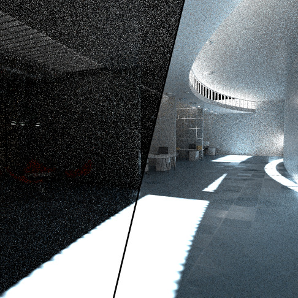
Abstract:
Even with the advent of hardware-accelerated ray tracing in modern GPUs, only a small number of rays can be traced at each pixel in real-time applications. This presents a significant challenge for path tracing, even when augmented with state-of-the art denoising algorithms. While the recently-developed ReSTIR algorithm [Bitterli et al. 2020] enables high-quality renderings of scenes with millions of light sources using just a few shadow rays at each pixel, there remains a need for effective algorithms to sample indirect illumination. We introduce an effective path sampling algorithm for indirect lighting that is suitable to highly parallel GPU architectures. Building on the screen-space spatio-temporal resampling principles of ReSTIR, our approach resamples multi-bounce indirect lighting paths obtained by path tracing. Doing so allows sharing information about important paths that contribute to lighting both across time and pixels in the image. The
resulting algorithm achieves a substantial error reduction compared to path tracing: at a single sample per pixel every frame, our algorithm achieves MSE improvements ranging from 9.3x to 166x in our test scenes. In conjunction with a denoiser, it leads to high-quality path traced global illumination at real-time frame rates on modern GPUs
Citation:
Yaobin Ouyang, Shiqiu Liu, Markus Kettunen, Matt Pharr, and Jacopo Pantaleoni. 2021. ReSTIR GI: Path Resampling for Real-Time Path Tracing. Computer Graphics Forum (High Performance Graphics 2021).
Spatiotemporal Reservoir Resampling for Real-Time Ray Tracing with Dynamic Direct Lighting
Benedikt Bitterli, Chris Wyman, Matt Pharr, Peter Shirley, Aaron Lefohn, and Wojciech Jarosz
SIGGRAPH 2020
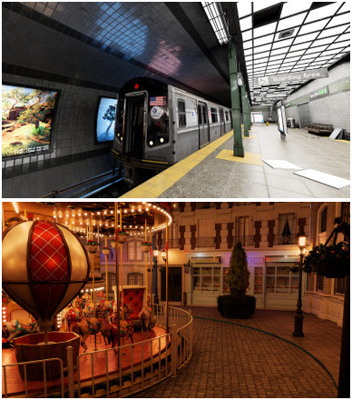
Abstract:
Efficiently rendering direct lighting from millions of dynamic light sources using Monte Carlo integration remains a challenging problem, even for off-line rendering systems. We introduce a new algorithm—ReSTIR—that renders such lighting interactively, at high quality, and without needing to maintain complex data structures. We repeatedly resample a set of candidate light samples and apply further spatial and temporal resampling to leverage information from relevant nearby samples. We derive an unbiased Monte Carlo estimator for this approach, and show that it achieves equal-error 6-60× faster than state-of-the-art methods. A biased estimator reduces noise further and is 35-65× faster, at the cost of some energy loss. We implemented our approach on the GPU, rendering complex scenes containing up to 3.4 million dynamic, emissive triangles in under 50ms per frame while tracing at most 8 rays per pixel.
Citation:
Benedikt Bitterli, Chris Wyman, Matt Pharr, Peter Shirley, Aaron Lefohn, and Wojciech Jarosz. 2020. Spatiotemporal reservoir resampling for real-time ray tracing with dynamic direct lighting.
ACM Transactions on Graphics (Proceedings of SIGGRAPH), 39
(4).
Practical Product Sampling by Fitting and Composing Warps
David Hart, Matt Pharr, Thomas Müller, Ward Lopes, Morgan McGuire, and Peter Shirley.
Eurographics Symposium on Rendering 2020
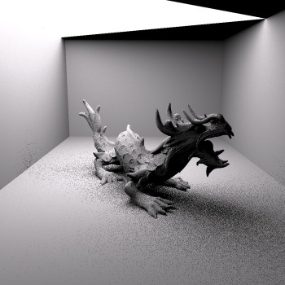
Abstract:
We introduce a Monte Carlo importance sampling method for integrands composed of products and show its application to rendering where direct sampling of the product is often difficult. Our method is based on warp functions that operate on the primary samples in [0,1)^n, where each warp approximates sampling a single factor of the product distribution. Our key insight is that individual factors are often well‐behaved and inexpensive to fit and sample in primary sample space, which leads to a practical, efficient sampling algorithm. Our sampling approach is unbiased, easy to implement, and compatible with multiple importance sampling. We show the results of applying our warps to projected solid angle sampling of spherical triangles, to sampling bilinear patch light sources, and to sampling glossy BSDFs and area light sources, with efficiency improvements of over 1.6× on real‐world scenes.
Citation:
David Hart, Matt Pharr, Thomas Müller, Ward Lopes, Morgan McGuire, and Peter Shirley. 2020. Practical product sampling by fitting and composing warps.
Computer Graphics Forum (Proceedings of EGSR 2020), 39
(4), 149—158.
Dynamic Many-Light Sampling for Real-Time Ray Tracing
Pierre Moreau, Matt Pharr, and Petrik Clarberg
High Performance Graphics 2019
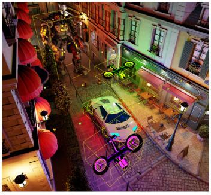
Abstract:
Monte Carlo ray tracing offers the capability of rendering scenes with large numbers of area light sources—lights can be sampled stochastically and shadowing can be accounted for by tracing rays, rather than using shadow maps or other rasterization-based techniques that do not scale to many lights or work well with area lights. Current GPUs only afford the capability of tracing a few rays per pixel at real-time frame rates, making it necessary to focus sampling on important light sources. While state-of-the-art algorithms for offline rendering build hierarchical data structures over the light sources that enable sampling them according to their importance, they lack efficient support for dynamic scenes. We present a new algorithm for maintaining hierarchical light sampling data structures targeting real-time rendering. Our approach is based on a two-level BVH hierarchy that reduces the cost of partial hierarchy updates. Performance is further improved by
updating lower-level BVHs via refitting, maintaining their original topology. We show that this approach can give error within 6% of recreating the entire hierarchy from scratch at each frame, while being two orders of magnitude faster, requiring less than 1 ms per frame for hierarchy updates for a scene with thousands of moving light sources on a modern GPU. Further, we show that with spatiotemporal filtering, our approach allows complex scenes with thousands of lights to be rendered with ray-traced shadows in 16.1 ms per frame.
Citation:
Pierre Moreau, Matt Pharr, and Petrik Clarberg. 2019. Dynamic many-light sampling for real-time ray tracing.
High Performance Graphics (Short Papers),
21—26.
Efficient Generation of Points that Satisfy Two-Dimensional Elementary Intervals
Matt Pharr
Journal of Computer Graphics Techniques
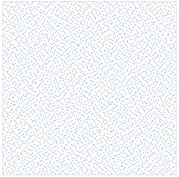
Abstract:
Precomputing high-quality sample points has been shown to be a useful technique for Monte Carlo integration in rendering; doing so allows optimizing properties of the points without the performance constraints of generating samples during rendering. A particularly useful property to incorporate is stratification across elementary intervals, which has been shown to reduce error in Monte Carlo integration. This is a key property of the recently-introduced progressive multi-jittered, pmj02 and pmj02bn points [Christensen et al. 2018]. For generating such sets of sample points, it is important to be able to efficiently choose new samples that are not in elementary intervals occupied by existing samples. Random search, while easy to implement, quickly becomes infeasible after a few thousand points. We describe an algorithm that efficiently generates 2D sample points that are stratified with respect to sets of elementary intervals. If a total of n sample
points are being generated, then for each sample, our algorithm uses O(n^1/2) time to build a data structure that represents the regions where a next sample may be placed. Given this data structure, valid samples can be generated in O(1) time. We demonstrate the utility of our method by generating much larger sets of pmj02bn points than were feasible previously
Citation:
Matt Pharr. 2019. Efficient generation of points that satisfy two-dimensional elementary intervals.
Journal of Computer Graphics Techniques (JCGT), 8
(1) 56—68.
A System for Acquiring, Processing, and Rendering Panoramic Light Field Stills for Virtual Reality
Ryan Overbeck, Daniel Erickson, Daniel Evangelakos, Matt Pharr, and Paul Debevec
SIGGRAPH Asia 2018
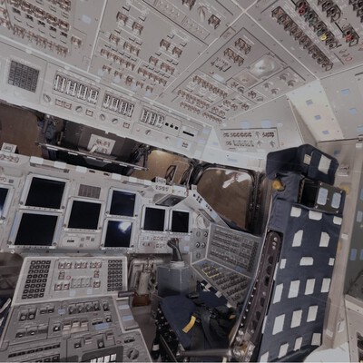
Abstract:
We present a system for acquiring, processing, and rendering panoramic light field still photography for display in Virtual Reality (VR). We acquire spherical light field datasets with two novel light field camera rigs designed for portable and efficient light field acquisition. We introduce a novel real-time light field reconstruction algorithm that uses a per-view geometry and a disk-based blending field. We also demonstrate how to use a light field prefiltering operation to project from a high-quality offline reconstruction model into our real-time model while suppressing artifacts. We introduce a practical approach for compressing light fields by modifying the VP9 video codec to provide high quality compression with real-time, random access decompression. We combine these components into a complete light field system offering convenient acquisition, compact file size, and high-quality rendering while generating stereo views at 90Hz on commodity VR
hardware. Using our system, we built a freely available light field experience application called Welcome to Light Fields featuring a library of panoramic light field stills for consumer VR which has been downloaded over 15,000 times.
Citation:
Ryan Overbeck, Daniel Erickson, Daniel Evangelakos, Matt Pharr, and Paul Debevec. 2018. A system for acquiring, processing, and rendering panoramic light field stills for virtual reality.
ACM Transactions on Graphics (Proceedings of SIGGRAPH Asia 2018) 37
(6).
View-Region Optimized Image-Based Scene Simplification
Puneet Lall, Silviu Borac, Dave Richardson, Matt Pharr, and Manfred Ernst
High Performance Graphics 2018
Third Place, Best Paper Award
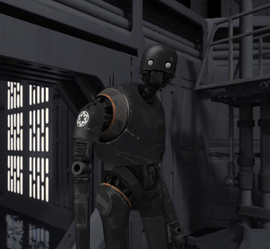
Abstract:
We present a new algorithm for image-based simplification of complex scenes for virtual reality (VR). The algorithm transforms geometrically-detailed environments into a layered quad tile representation that is optimized for a specified viewing region and is renderable on low-power mobile-class VR devices. A novel constrained optimization formulation ensures that the scene can be rendered within a predetermined compute budget, with limits on both primitive count and fill rate. Furthermore, we introduce a new method for texturing from point samples of the original scene geometry that generates high-quality silhouettes without the drawbacks of traditional point splatting.
The resulting representation achieves a visual fidelity that was previously impossible on mobile graphics hardware; our algorithm can typically generate a high-quality representation of visually-rich scenes with billions of triangles using just 72k triangles and a single high-resolution texture map (with generally only about 50% more texels than a stereo panorama). The effectiveness of the approach is demonstrated with a set of challenging test cases.
Citation:
Puneet Lall, Silviu Borac, Dave Richardson, Matt Pharr, and Manfred Ernst. 2018. View-region optimized image-based scene simplification.
Proceedings of the ACM on Computer Graphics and Interactive Techniques.
Sequences With Low‐Discrepancy Blue‐Noise 2‐D Projections
Hélène Perrier, David Coeurjolly, Feng Xie, Matt Pharr, Pat Hanrahan, and Victor Ostromoukhov
Eurographics 2018
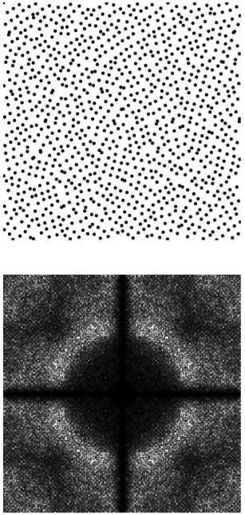
Abstract:
Distributions of samples play a very important role in rendering, affecting variance, bias and aliasing in Monte-Carlo and Quasi-Monte Carlo evaluation of the rendering equation. In this paper, we propose an original sampler which inherits many important features of classical low-discrepancy sequences (LDS): a high degree of uniformity of the achieved distribution of samples, computational efficiency and progressive sampling capability. At the same time, we purposely tailor our sampler in order to improve its spectral characteristics, which in turn play a crucial role in variance reduction, anti-aliasing and improving visual appearance of rendering. Our sampler can efficiently generate sequences of multidimensional points, whose power spectra approach so-called Blue-Noise (BN) spectral property while preserving low discrepancy (LD) in certain 2-D projections. In our tile-based approach, we perform permutations on subsets of the original Sobol LDS. In a
large space of all possible permutations, we select those which better approach the target BN property, using pair-correlation statistics. We pre-calculate such “good” permutations for each possible Sobol pattern, and store them in a lookup table efficiently accessible in runtime. We provide a complete and rigorous proof that such permutations preserve dyadic partitioning and thus the LDS properties of the point set in 2-D projections. Our construction is computationally efficient, has a relatively low memory footprint and supports adaptive sampling. We validate our method by performing spectral/discrepancy/aliasing analysis of the achieved distributions, and provide variance analysis for several target integrands of theoretical and practical interest.
Citation:
Hélène Perrier, David Coeurjolly, Feng Xie, Matt Pharr, Pat Hanrahan, and Victor Ostromoukhov. 2018. Sequences with Low-Discrepancy Blue-Noise 2-D Projections
Computer Graphics Forum (Proceedings of Eurographics) 37
(2), 339—353.
ispc: A SPMD compiler for high-performance CPU programming
Matt Pharr and William R. Mark
Innovative Parallel Computing (InPar) 2012
Best Paper Award
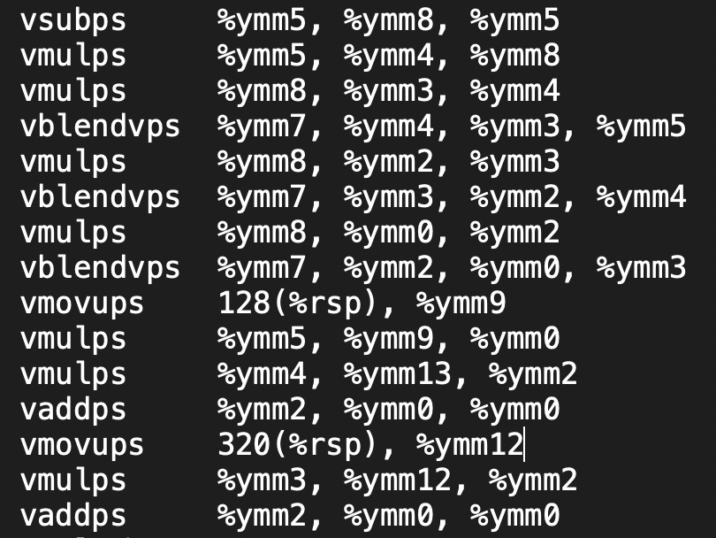
Abstract:
SIMD parallelism has become an increasingly important mechanism for delivering performance in modern CPUs, due its power efficiency and relatively low cost in die area compared to other forms of parallelism. Unfortunately, languages and compilers for CPUs have not kept up with the hardware's capabilities. Existing CPU parallel programming models focus primarily on multi-core parallelism, neglecting the substantial computational capabilities that are available in CPU SIMD vector units. GPU-oriented languages like OpenCL support SIMD but lack capabilities needed to achieve maximum efficiency on CPUs and suffer from GPU-driven constraints that impair ease of use on CPUs.
We have developed a compiler, the Intel SPMD Program Compiler (ispc), that delivers very high performance on CPUs thanks to effective use of both multiple processor cores and SIMD vector units. ispc draws from GPU programming languages, which have shown that for many applications the easiest way to program SIMD units is to use a single-program, multiple-data (SPMD) model, with each instance of the program mapped to one SIMD lane. We discuss language features that make ispc easy to adopt and use productively with existing software systems and show that ispc delivers up to 35x speedups on a 4-core system and up to 240x speedups on a 40-core system for complex workloads (compared to serial C++ code).
Citation:
Matt Pharr and William R. Mark. 2012. ispc: A SPMD compiler for high-performance CPU programming.
Proceedings of Innovative Parallel Computing (InPar) 2012.
Monte Carlo evaluation of non-linear scattering equations for subsurface reflection
Matt Pharr and Pat Hanrahan
SIGGRAPH 2000
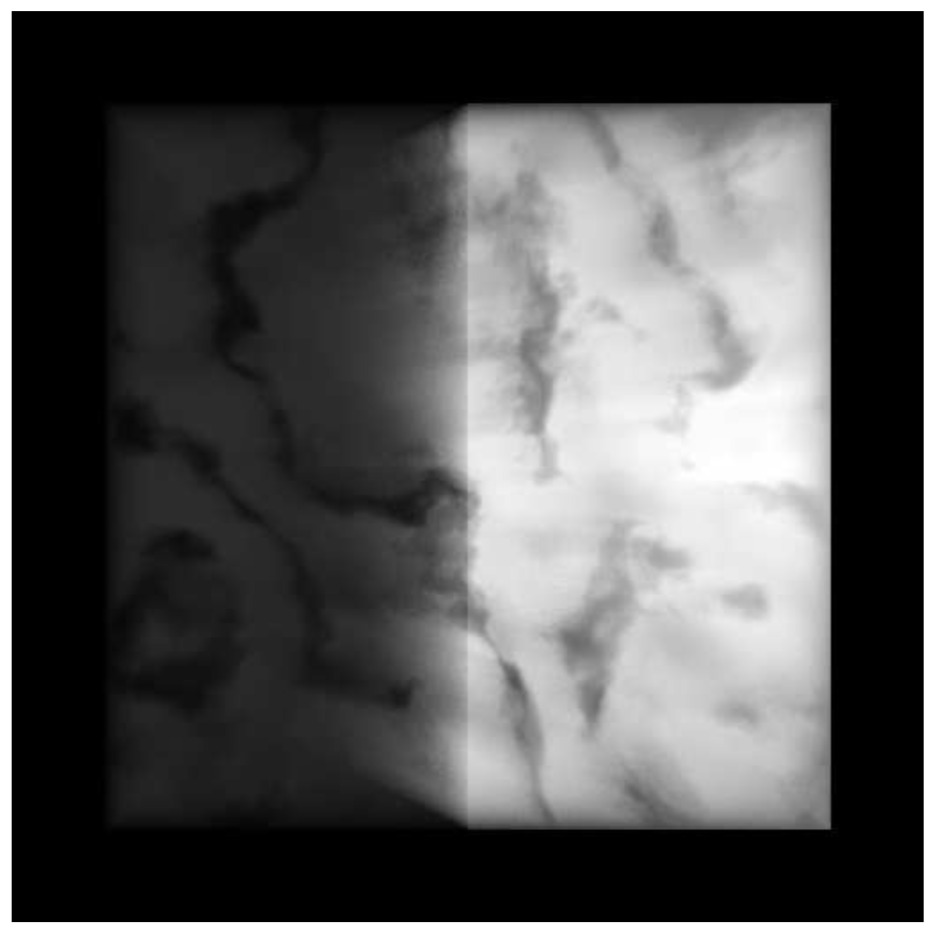
Abstract:
We describe a new mathematical framework for solving a wide variety of rendering problems based on a non-linear integral scattering equation. This framework treats the scattering functions of complex aggregate objects as first-class rendering primitives; these scattering functions accurately account for all scattering events inside them. We also describe new techniques for computing scattering functions from the composition of scattering objects. We demonstrate that solution techniques based on this new approach can be more efficient than previous techniques based on radiance transport and the equation of transfer and we apply these techniques to a number of problems in rendering scattering from complex surfaces.
Citation:
Matt Pharr and Pat Hanrahan. 2000. Monte Carlo evaluation of non-linear scattering equations for subsurface reflection.
Proceedings of the 27th annual conference on Computer graphics and interactive techniques (SIGGRAPH '00),
75–84.
Realistic modeling and rendering of plant ecosystems
Oliver Deussen, Pat Hanrahan, Bernd Lintermann, Radomir Mech, Matt Pharr, and Przemyslaw Prusinkiewicz.
SIGGRAPH 1998
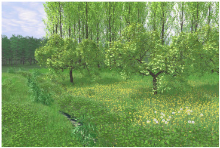
Abstract:
Modeling and rendering of natural scenes with thousands of plants poses a number of problems. The terrain must be modeled and plants must be distributed throughout it in a realistic manner, reflecting the interactions of plants with each other and with their environment. Geometric models of individual plants, consistent with their positions within the ecosystem, must be synthesized to populate the scene. The scene, which may consist of billions of primitives, must be rendered efficiently while incorporating the subtleties of lighting in a natural environment. We have developed a system built around a pipeline of tools that address these tasks. The terrain is designed using an interactive graphical editor. Plant distribution is determined by hand (as one would do when designing a garden), by ecosystem simulation, or by a combination of both techniques. Given parameterized procedural models of individual plants, the geometric complexity of the scene is
reduced by approximate instancing, in which similar plants, groups of plants, or plant organs are replaced by instances of representative objects before the scene is rendered. The paper includes examples of visually rich scenes synthesized using the system.
Citation:
Oliver Deussen, Pat Hanrahan, Bernd Lintermann, Radomir Mech, Matt Pharr, and Przemyslaw Prusinkiewicz. 1998. Realistic modeling and rendering of plant ecosystems.
Proceedings of the 25th annual conference on Computer graphics and interactive techniques (SIGGRAPH '98),
275–286.
Rendering complex scenes with memory-coherent ray tracing
Matt Pharr, Craig Kolb, Reid Gershbein, and Pat Hanrahan
SIGGRAPH 1997
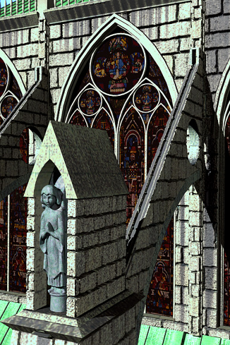
Abstract:
Simulating realistic lighting and rendering complex scenes are usually considered separate problems with incompatible solutions. Accurate lighting calculations are typically performed using ray tracing algorithms, which require that the entire scene database reside in memory to perform well. Conversely, most systems capable of rendering complex scenes use scan-conversion algorithms that access memory coherently, but are unable to incorporate sophisticated illumination. We have developed algorithms that use caching and lazy creation of texture and geometry to manage scene complexity. To improve cache performance, we increase locality of reference by dynamically reordering the rendering computation based on the contents of the cache. We have used these algorithms to compute images of scenes containing millions of primitives, while storing ten percent of the scene description in memory. Thus, a machine of a given memory capacity can render realistic scenes
that are an order of magnitude more complex than was previously possible.
Citation:
Matt Pharr, Craig Kolb, Reid Gershbein, and Pat Hanrahan. 1997. Rendering complex scenes with memory-coherent ray tracing.
Proceedings of the 24th annual conference on Computer graphics and interactive techniques (SIGGRAPH '97),
101–108.
Geometry caching for ray-tracing displacement maps
Matt Pharr and Pat Hanrahan
Eurographics Workshop on Rendering 1996
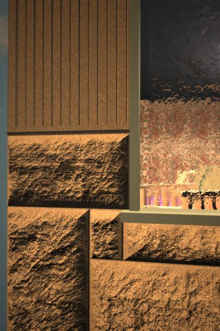
Abstract:
We present a technique for rendering displacement mapped geometry in a ray-tracing renderer. Displacement mapping is an important technique for adding detail to surface geometry in rendering systems. It allows complex geometric variation to be added to simpler geometry, without the cost in geometric complexity of completely describing the nuances of the geometry at modeling time and with the advantage that the detail can be added adaptively at rendering time. The cost of displacement mapping is geometric complexity. Renderers that provide it must be able to efficiently render scenes that have effectively millions of geometric primitives. Scan-line renderers process primitives one at a time, so this complexity doesn't tax them, but traditional ray-tracing algorithms require random access to the entire scene database, so any part of the scene geometry may need to be available at any point during rendering. If the displaced geometry is fully instantiated in
memory, it is straightforward to intersect rays with it, but displacement mapping has not yet been practical in ray-tracers due to the memory cost of holding this much geometry. We introduce the use of a geometry cache in order to handle the large amounts of geometry created by displacement mapping. By caching a subset of the geometry created and rendering the image in a coherent manner, we are able to take advantage of the fact that the rays spawned by traditional ray-tracing algorithms are spatially coherent. Using our algorithm, we have efficiently rendered highly complex scenes while using a limited amount of memory.
Citation:
Matt Pharr and Pat Hanrahan. 1996. Geometry caching for ray-tracing displacement maps.
Proceedings of the Eurographics Workshop on Rendering.
{kind=link}
![[Plate 1]](assets/img/displace-plate1.png){kind=link}
![[Plate 2]](assets/img/displace-plate2.png){kind=link}
![[Plate 3]](assets/img/displace-plate3.png){kind=link}